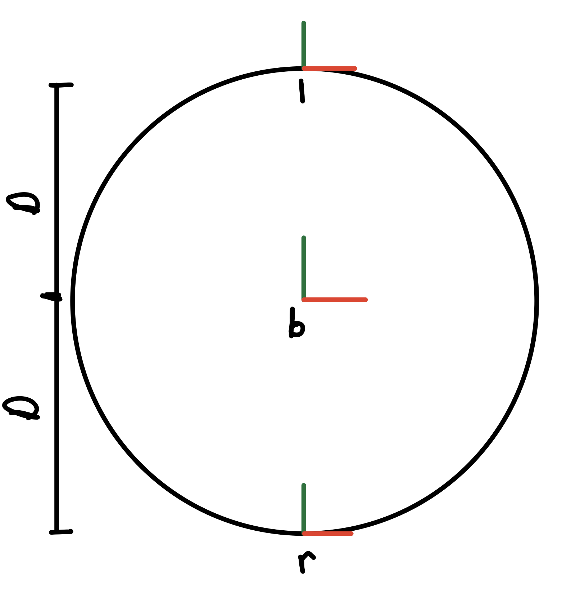
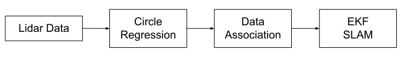

Differential Drive & SLAM from Scratch
Wrote all software for differential drive with (dead reckoning) odometry. Then, implemented an extended kalman filter for SLAM.
Overview
In this project, I took a Turtlebot3 Burger and removed all the preinstalled ROS software.
Then, I wrote, tested, and implemented my own C++ scripts for 2D transformations, differential drive, odometry, and SLAM.
This project served as a learning experience in ROS/C++ and demonstrates my knowledge of robotic software development.
The only robotic software in this project that I did not code myself is the C code controlling the motors and lidar.
-insert gif of turtlebot-
Setup
Robot Visualization
I started this project by creating a ROS package (-insert link-) for robot visualization in Rviz.
This was the first step in the simulation process.
It was imperative to test my software in simulation prior to deploying new features onto the physical robot.
The controlled simulation environment simplifies the process of finding a correcting errors in my code.
This ROS package utilizes the URDF files written by the TurtleBot manufacturer to display the Robot in Rviz.
-insert rviz pic-
2D Tranformations
Due to the math involved in differential drive and odometry, I decided to write a C++ library (-insert rigid2d link-) for 2D transformations. The library provides data structures for 2D transformations, vectors, and twists. I wrote standard operator overload methods for addition, subtraction, and multiplication as well as methods for applying transformations to vectors and twists. The library was heavily tested (-insert link-). It serves as the backbone to all the software a created from this point.
Kinematics
Differential drive robots are controlled by a twist representing body velocity and angular velocity. This means to control the robot, I needed to calculate the wheel velocities that achieve the desired twist. I used the following diagram to derive the relationship between wheel velocities and body twist.
Figure 1. Reference frames for TurtleBot. X axes are in red and y axes are in greed. Frame b is the body, r is the right wheel, and l is the left wheel.
To start the derivation, I wrote the transformation matricies from the body to the wheels.
$$T_{bl} = \begin{bmatrix} 1 & 0 & 0\\ 0 & 1 & D \\ 0 & 0 & 1 \end{bmatrix} \hspace{20mm}
T_{br} = \begin{bmatrix} 1 & 0 & 0\\ 0 & 1 & -D \\ 0 & 0 & 1 \end{bmatrix}$$
Then, I wrote the adjoint matricies between the body and wheels.
$$A_{bl} = \begin{bmatrix} 1 & 0 & 0\\ D & 1 & 0 \\ 0 & 0 & 1 \end{bmatrix} \hspace{20mm}
A_{br} = \begin{bmatrix} 1 & 0 & 0\\ -D & 1 & 0 \\ 0 & 0 & 1 \end{bmatrix}$$
$$A_{lb} = \begin{bmatrix} 1 & 0 & 0\\ -D & 1 & 0 \\ 0 & 0 & 1 \end{bmatrix} \hspace{20mm}
A_{rb} = \begin{bmatrix} 1 & 0 & 0\\ D & 1 & 0 \\ 0 & 0 & 1 \end{bmatrix}$$
The following equation is used to relate twist in the wheel frame to the control.
$$\begin{equation} \begin{bmatrix} \dot{x_i} \\ \dot{y_i} \end{bmatrix} = \begin{bmatrix} r\dot{φ}_i \\ 0 \end{bmatrix} \end{equation}$$
r is the wheel radius
\(\dot{φ}\) is the rotational velocity
i is the wheel (l or r in this case)
Now, I can rewrite the body twist in the wheel frames.
$$V_b = \begin{bmatrix} \dot{θ} \\ \dot{x} \\ \dot{y} \end{bmatrix} \hspace{20mm}
V_i = \begin{bmatrix} \dot{θ} \\ r\dot{φ}_i \\ 0 \end{bmatrix}$$
Since I am calculating controls, I want to solve for \(\dot{φ}_i\) in terms of D, r, \(\dot{θ}\), and \(\dot{x}\).
I used the following relationships to do so.
$$V_l = A_{lb}V_b$$
$$\begin{bmatrix} \dot{θ} \\ r\dot{φ}_l \\ 0 \end{bmatrix} =
\begin{bmatrix} 1 & 0 & 0\\ -D & 1 & 0 \\ 0 & 0 & 1 \end{bmatrix}
\begin{bmatrix} \dot{θ} \\ \dot{x} \\ \dot{y} \end{bmatrix}$$
$$\begin{equation} \mathbf{\dot{φ}_l = \frac{-D\dot{θ}+\dot{x}}{r}} \end{equation}$$
$$V_r = A_{rb}V_b$$
$$\begin{bmatrix} \dot{θ} \\ r\dot{φ}_r \\ 0 \end{bmatrix} =
\begin{bmatrix} 1 & 0 & 0\\ D & 1 & 0 \\ 0 & 0 & 1 \end{bmatrix}
\begin{bmatrix} \dot{θ} \\ \dot{x} \\ \dot{y} \end{bmatrix}$$
$$\begin{equation} \mathbf{\dot{φ}_r = \frac{D\dot{θ}+\dot{x}}{r}} \end{equation}$$
With the rigid2d library, I implemented the kinematics for differential drive in a class called diff_drive (-insert link-).
I wrote a ROS node called fake_turtle (-insert link-) that converts body velocities to wheel controls the publishes the controls.
This allowed me to visualize the code in Rviz.
(-insert gif of wheels moving-)
Odometry
To make the robot move in simulation, I needed to implement odometry.
There are two ways I could have done this, using IMU or dead reckoning.
The original TurtleBot software uses IMU which is often inaccurate due to sensor noise.
I decided to use dead reckoning.
This method uses the change in wheel angles to calculate the robot's location.
It performs best on flat planes with minimal slip.
Since I typically drive the Turtlebot on a wood floor with good traction, this was the obvious choice.
The first step to dead reckoning is obtaining the angular velocities of the wheels.
Using the wheel encoders, I was able to measure the the angular velocities.
Then I calculated the body twist by rearranging equations (2) and (3).
$$\begin{equation} V_b = \begin{bmatrix} \dot{θ} \\ \dot{x} \\ \dot{y} \end{bmatrix} =
\begin{bmatrix} \frac{r(\dot{φ}_r-\dot{φ}_l)}{2D} \\ \frac{r(\dot{φ}_r+\dot{φ}_l)}{2} \\ 0 \end{bmatrix} \end{equation}$$
The next step is integrating the twist \(V_b\) to find the change in position and orientation \(T_{bb'}\) where {b} is the original body frame and {b'} is the body frame after movement.
You could do this using matrix exponentials, but that is computationally expensive.
In 2D, there are more efficient methods.
When integrating the twist in 2D, there are two scenarios.
Sceneraio 1: Translation without Rotation
In the case \(V_b\) has no rotational component, \(T_{bb'}\) is a pure translation determined by the twist.
$$V_b = \begin{bmatrix} 0 \\ \dot{x} \\ \dot{y} \end{bmatrix} \hspace{20mm}
T_{bb'} = \begin{bmatrix} 1 & 0 & \dot{x}\\ 0 & 1 & \dot{y} \\ 0 & 0 & 1 \end{bmatrix}$$
Scenario 2: Translation with Rotation
In the case \(V_b\) has translational and rotational comopnents, the math gets more complicated.
For any two unit vectors (vector a and vector b) on a plane, there is a pure rotation that transforms vector a to vector b.
Finding the center of rotation in the frame aligned with {b} is the first step to integrate the twist.
I will refer to frame {s} as the frame at the center of rotation in the orientation of frame {b}.
I will refer to frame {s'} as the frame at the center of rotation in the orientation of frame {b'}.
I determined the location of frame {s} using the adjoint.
$$\begin{bmatrix} 1 & 0 & 0\\ y_{s} & 1 & 0 \\ -x_{s} & 0 & 1 \end{bmatrix}
\begin{bmatrix} Δ θ \\ Δ x_{b} \\ Δ y_{b} \end{bmatrix} =
\begin{bmatrix} \dot{θ} \\ 0 \\ 0 \end{bmatrix}$$
Solving for \(x_{s}\) and \(y_{s}\) gives you \(T_{bs}\)
$$T_{bs} = \begin{bmatrix} 1 & 0 & x_{s} \\ 0 & 1 & y_{s} \\ 0 & 0 & 1 \end{bmatrix}$$
Next, I determined Tss' which is a pure rotation.
$$T_{ss'} = \begin{bmatrix} \cos{\dot{θ}} & -\sin{\dot{θ}} & 0 \\ \sin{\dot{θ}} & \cos{\dot{θ}} & 0 \\ 0 & 0 & 1 \end{bmatrix}$$
The last piece was determining \(T_{s'b'}\).
Because frame {s} is the center of rotation between frame {b} and frame {b'}, we can think of frame {s} as the center of a circle with frames {b} and {b'} on the circle's circumference.
Because frame {s} is oriented with {b} and frame {s'} is oriented with {b'}, \(T_{bs} = T_{s'b'}\). Finally, to solve for \(T_{bb'}\) we can use the following equation.
$$\begin{equation} T_{bb'} = T_{bs}T_{ss'}T_{s'b'} \end{equation}$$
Now that we characterized all robotic movements, we need to track the robot. This step is simple.
\(T_{wb}\) is the transformation from the world frame to the robot.
\(T_{bb'}\) is calculated everytime the robot moves.
To update the robots location, I used the following equation everytime the robot moved.
$$\begin{equation} T_{wb'} = T_{wb}T_{bb'} \end{equation}$$
$$T_{wb} = T_{wb'}$$
-insert odometry experiments-
SLAM in Simulation
At this point in the project, I am able to teleoperate the TurtleBot and accurately track its location. This is the framework for the real challenge in this project, SLAM using and Extended Kalman Filter (EKF). To simplify the SLAM problem, I am using 10 cylindrical landmarks of equal radius. I will use these landmarks for robot localization. The robot will only be trained to regonize and use these landmarks in the EKF.
Figure x. SLAM pipeline. Lidar data is the input. Circle regression determines which data are landmarks. Data association matches circles found in the lidar data with initialized landmarks from SLAM. The associated data is then used the refine the SLAM estimate.
To simplify the software developement required for thie pipeline. I started with SLAM in Simulation.
This allowed me to develop and test the EKF prior to attempting circle regression and data association.
Simulation Setup
Currently in simluation, the odometry data gives me the ground truth location of the robot. This makes SLAM useless. I needed to add noise to my simulation to make it more like the real world. I added gaussian noise to the commanded twist and introduced slip to the wheel angels. This made my odometry data less accurate, as the robot moved. Next, I added cylinders to the simulation environment to represent to landmarks. By adding gaussian noise to the ground truth landmark locations I was able to simulate the lidar data, circle regression, and data association in the SLAM pipeline.
EKF SLAM Implementation
With my simulation setup, I needed to use the noisy landmark locations to localize the robot in the simulation.
By tracking the robot's ground truth location, odometry location, and SLAM location, as the robot moved in the environment I would be able to assess whether or not the algorithm was working.
I split the algorithm into 3 parts.
Initialization
I started intializing the state of the environment.
$$q_{t} = \begin{bmatrix} θ \\ x \\ y \end{bmatrix} = \begin{bmatrix} 0 \\ 0 \\ 0 \end{bmatrix} \hspace{20mm}
m_{t} = \begin{bmatrix} m_{{x}_{1}} \\ m_{{x}_{1}} \\ \textrm{...} \\ m_{{x}_{n}} \\ m_{{y}_{n}} \end{bmatrix} =
\begin{bmatrix} 0_{2n \textrm{ x } 1} \end{bmatrix} \hspace{20mm}
ξ_{t} = g(ξ_{t-1},u_{t},w_{t}) = \begin{bmatrix} q_{t} \\ m_{t} \end{bmatrix} = \begin{bmatrix} 0_{2n+3 \textrm{ x } 1} \end{bmatrix}$$
\(q_{t}\) is the current robot state estimate
\(m_{t}\) is the current landmark state estimate
\(n\) is the max number of landmarks
\(ξ_{t}\) is the current state estimate of the entire environment
\(g(ξ_{t-1},u_{t},w_{t})\) is a transition function modeling the robot and map's movement
\(u_{t}\) is the odometry model derived in the previous section
\(w_{t}\) is the process noise in the system
Then, I initialized the state covariance matrix.
$$Σ_{0} = \begin{bmatrix} Σ_{0,q} & 0_{3 \textrm{x} 2n} \\ 0_{2n \textrm{x} 3} & Σ_{0,m} \end{bmatrix}$$
\(Σ_{0,q} \in \mathbb{R}^{3 \textrm{x} 3}\) is the covariance of the robot state
\(Σ_{0,m} \in \mathbb{R}^{2n \textrm{x} 2n}\) is the covariance of the landmark state matrix
\(Σ_{0,q}\) was initialized to all zeros because the initial state of the robot is known.
\(Σ_{0,m}\) was initialized as a diagonal matrix with infinity on the diagonal because the landmark locations are unknown to the robot.
Lastly, I initialized the noise covariance matricies. These covariance matricies are parameters that can be tuned for better SLAM results.
$$Q = \begin{bmatrix} 0.1 & 0 & 0 \\ 0 & 0.1 & 0 \\ 0 & 0 & 0.1 \end{bmatrix} \hspace{20mm}
\bar{Q} = \begin{bmatrix} Q & 0_{3 \textrm{x} 2n} \\ 0_{2n \textrm{x} 3} & 0_{2n \textrm{x} 2n} \end{bmatrix} \hspace{20mm}
R = \begin{bmatrix} 0.1 & 0 \\ 0 & 0.1 \end{bmatrix}$$
Q is the process noise covariance matrix
\(\bar{Q}\) is the process noise expanded to fill the whole state
R is the sensor noise covariance matrix
Predicition
The first step to predicition is updating the state estimate using odometry.
$$\begin{equation} ξ^{-}_{t} = g(ξ_{t-1},u_{t},0) \end{equation}$$
Then, propagate the uncertainty using the linearized state transition model.
$$\begin{equation} Σ^{-}_{t} = A_{t}Σ_{t-1}A^{T}_{t}+\bar{Q} \end{equation}$$
The EKF uses a state transition model, \(g(ξ_{t-1},u_{t},0)\), that is linearized about the current state estimate.
In equation (3), \(A_{t}\) is the deviative g with respect to the state, \(g'(ξ_{t-1},u_{t},0)\), used in the linearization.
\(A_{t}\) has two equations.
No Rotation:
$$\begin{equation} A_{t} = g'(ξ_{t-1},u_{t},0) = I +
\begin{bmatrix} P_{1} & 0_{3 \textrm{x} 2n} \\ 0_{2n \textrm{x} 3} & 0_{2n \textrm{x} 2n} \end{bmatrix} \end{equation}$$
$$P_{1} = \begin{bmatrix} 0 & 0 & 0 \\ -Δx_{t}\sin(θ_{t-1}) & 0 & 0 \\ Δx_{t}\cos(θ_{t-1}) & 0 & 0 \end{bmatrix}$$
Rotation:
$$\begin{equation} A_{t} = g'(ξ_{t-1},u_{t},0) = I +
\begin{bmatrix} P_{2} & 0_{3 \textrm{x} 2n} \\ 0_{2n \textrm{x} 3} & 0_{2n \textrm{x} 2n} \end{bmatrix}\end{equation}$$
$$P_{2} = \begin{bmatrix} 0 & 0 & 0 \\
-\frac{Δx_{t}}{Δθ_{t}}\cos(θ_{t-1})+\frac{Δx_{t}}{Δθ_{t}}\cos(θ_{t-1}+Δθ_{t}) & 0 & 0 \\
-\frac{Δx_{t}}{Δθ_{t}}\sin(θ_{t-1})+\frac{Δx_{t}}{Δθ_{t}}\sin(θ_{t-1}+Δθ_{t}) & 0 & 0 \end{bmatrix}$$
Update
The update step of the EKF is a loop for each measurement.
In this explanation, we will refer to the measurement as i and the associated landmark as j.
1) Calculate the theoretical measurement using the current state estimate.
$$\begin{equation} \hat{z}^{i}_{t} = h_{j}(ξ^{-}_{t}) \end{equation}$$
$$h_{j}(ξ^{-}_{t}) = \begin{bmatrix} \sqrt{(m_{x,j}-x_{t})^{2}+(m_{y,j}-y_{t})^{2}} \\ \textrm{atan2}(m_{y,j}-y_{t},m_{x,j}-x_{t})-θ_{t} \end{bmatrix}$$
\(\hat{z}^{i}_{t}\) is the theoretical range and bearing from the robot to landmark
2) Calculate the Kalman gain using the linearized measurement model.
$$\begin{equation} K_{i} = Σ^{-}_{t}H^{T}_{j}(H_{j}Σ^{-}_{t}H^{T}_{j}+R)^{-1} \end{equation}$$
$$H_{j} = h_{j}'(ξ^{-}_{t}) =
\begin{bmatrix} 0 & \frac{-δ_{x}}{\sqrt{d}} & \frac{-δ_{y}}{\sqrt{d}} & 0_{1 \textrm{ x } 2(j-1)} & \frac{δ_{x}}{\sqrt{d}} & \frac{δ_{y}}{\sqrt{d}} & 0_{1 \textrm{ x } 2n-2j} \\
-1 & \frac{δ_{y}}{d} & \frac{-δ_{x}}{d} & 0_{1 \textrm{ x } 2(j-1)} & \frac{-δ_{y}}{d} & \frac{δ_{x}}{d} & 0_{1 \textrm{ x } 2n-2j} \end{bmatrix}$$
$$δ_{x} = m_{x,j}-x_{t}$$
$$δ_{y} = m_{y,j}-y_{t}$$
$$d = δ_{x}^2+δ_{y}^2$$
3) Calculate the posterior state update
$$\begin{equation} ξ_{t} = ξ^{-}_{t}+K_{i}(z^{i}_{t}-\hat{z}^{i}_{t}) \end{equation}$$
\(z^{i}_{t}\) is the measured range and bearing from the robot to landmark
4) Calculate the posterior covariance
$$ \begin{equation} Σ_{t} = (I-K_{i}H_{j})Σ^{-}_{t} \end{equation} $$
5) Update state and covariance for next measurement (i)
$$ Σ_{t}^{-} = Σ_{t} $$
$$ ξ_{t}^{-} = ξ_{t} $$
Future Work